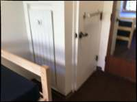
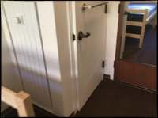
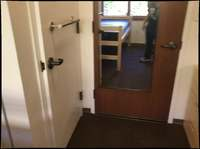
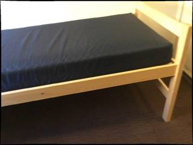
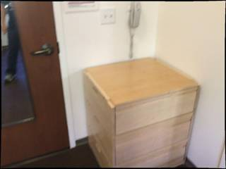
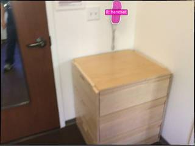
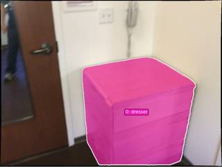

To determine the length of the longest dimension of the telephone, we can use surrounding objects for scale. In frames 6, 7, and 8, a white, wall-mounted telephone is visible on the wall above a dresser and next to a standard electrical outlet.
- Reference Object (Electrical Outlet): A standard North American duplex electrical outlet is approximately 11.5 cm (4.5 inches) in height.
- Comparison: By comparing the telephone to the outlet in frame 7, the telephone's height (its longest dimension) appears to be roughly 1.5 to 2 times the height of the outlet.
- Calculation: $11.5\text{ cm} \times 1.7 \approx 19.5\text{ cm}$ or $11.5\text{ cm} \times 2 \approx 23\text{ cm}$.
- Standard Dimensions: Typical basic wall-mounted telephones of this style generally have a height ranging from 20 to 25 cm (approximately 8 to 10 inches).
Based on the visual scale relative to the electrical outlet and standard product dimensions, the longest dimension of the telephone is approximately 20 cm.
20
import numpy as np # 1. Locate the telephone in InputImages[6] img_idx = 6 img = InputImages[img_idx] W, H = img.width, img.height bbox_norm = vlm.locate(img, "Give the bounding box (x1, y1, x2, y2) in 0-1000 normalized scale for the telephone on the wall. Reply with ONLY the numbers.") print(f"BBox norm: {bbox_norm}") # Parse bbox try: x1, y1, x2, y2 = map(int, bbox_norm.replace(',', ' ').split()) except ValueError: # Fallback if VLM returns something else ReturnAnswer("Could not parse bbox") # Convert to pixels px1, py1, px2, py2 = tools.Geometry.normalized_to_pixel((x1, y1, x2, y2), W, H) bbox = [px1, py1, px2, py2] # 2. Segment the telephone seg = tools.SAM3.segment_image_by_box(img, bbox, label="telephone") fi = seg.frame_indices[0] # Verify segmentation mask = seg.get_mask(frame=fi, object=0) area = mask.sum() print(f"Mask area: {area} pixels") show([img, seg.visualize(fi)]) # 3. Reconstruct the scene recon = tools.Reconstruct.Reconstruct(InputImages) # 4. Get 3D points and compute longest dimension points = seg.get_masked_points(recon, frame=fi, object=0) if points is None or len(points) == 0: ReturnAnswer("No 3D points found for telephone") # Filter points by confidence if possible, but get_masked_points usually does that or we can use recon.points.confidence # Since get_masked_points is a helper, let's just use the points. # To find the longest dimension, we find the max distance between any two points in the cloud. # For efficiency and robustness, we can use the diameter of the point cloud. # With a small number of points, we can just do a brute force distance matrix. if len(points) > 1000: # Subsample for speed if too many points indices = np.random.choice(len(points), 1000, replace=False) points = points[indices] # Compute distance matrix diff = points[:, np.newaxis, :] - points[np.newaxis, :, :] dist_matrix = np.linalg.norm(diff, axis=2) max_dist_m = np.max(dist_matrix) # Convert to cm max_dist_cm = max_dist_m * 100 print(f"Longest dimension: {max_dist_cm:.2f} cm") ReturnAnswer(max_dist_cm)
[VLM Q | locate] Before answering, first check whether what the question describes is clearly visible in the provided image(s). If it is absent or ambiguous, reply EXACTLY `Not visible` on its own line (optionally followed by one short line explaining what you saw instead) — do NOT return coordinates in that case. Only if the requested target is clearly and unambiguously present, answer the request below. Request: Give the bounding box (x1, y1, x2, y2) in 0-1000 normalized scale for the telephone on the wall. Reply with ONLY the numbers. [VLM A | locate] 764 10 832 296 BBox norm: 764 10 832 296 Mask area: 3438 pixels [image: show_0001] Longest dimension: 72.10 cm [ReturnAnswer] Answer submitted: 72.09644913673401

Task Analysis The objective is to determine the length of the longest dimension (length, width, or height) of a telephone in centimeters. This is a metric measurement task requiring 3D spatial reasoning. The target variable is a scalar value in centimeters. The coordinate system needed is world-space 3D to obtain absolute metric dimensions.
Information Needs
- Object Identification: Precise location and visual confirmation of the "telephone" in the images.
- 3D Geometry: A metric 3D reconstruction of the scene to convert pixel-space observations into real-world measurements (meters).
- Precise Segmentation: Accurate masks of the telephone across multiple frames to capture its full 3D extent.
- Metric Scale: The
metric_scalefrom the reconstruction to ensure the final value is in absolute units.
Computation Plan
- Visual Identification: Use
show(InputImages[0], InputImages[4], InputImages[7])to identify the telephone and determine which frames provide the best views of its full extent. - 3D Reconstruction: Perform a full scene reconstruction using
recon = tools.Reconstruct.Reconstruct(InputImages). - Object Segmentation:
- Attempt to segment the telephone using
seg = tools.SAM3.segment_image_by_text(InputImages[0], "telephone"). - If text segmentation is empty or inaccurate (verified via
seg.visualize(fi)andshow()), usevlm.locateon a clear frame to get a bounding box, then segment usingtools.SAM3.segment_image_by_box. - Ensure segmentation is performed across all frames where the telephone is visible to maximize the captured 3D point cloud.
- Attempt to segment the telephone using
- Mask Verification: Call
show()on the original images and theseg.visualize(fi)overlays to confirm the masks tightly bound the telephone without including background or other objects. - 3D Point Extraction:
- For each frame
fiinseg.frame_indices, extract the world-space points belonging to the telephone usingpoints_3d = seg.get_masked_points(recon, frame=fi, object=0). - Aggregate all points from all frames into a single global point cloud for the telephone.
- For each frame
- Dimension Calculation:
- Compute the distance between the two most distant points in the aggregated 3D point cloud (the diameter of the point set) using
tools.Geometry.euclidean_distanceor by calculating the maximum extent of the point cloud's oriented bounding box. - This maximum distance represents the longest dimension of the object.
- Compute the distance between the two most distant points in the aggregated 3D point cloud (the diameter of the point set) using
- Unit Conversion: Convert the resulting distance from meters to centimeters by multiplying by 100.
Verification
- Mask Integrity: Visually verify that the segmentation masks are consistent across frames and do not "leak" into the table or surrounding environment.
- Reconstruction Sanity: Check the
recon.metric_scaleand the general layout of the reconstructed scene viarecon.render_bev(masks=seg)to ensure the 3D structure is plausible. - Multi-frame Consistency: Compare the calculated longest dimension using points from a single frame versus the aggregated point cloud to ensure stability.
- Physical Sanity Check: Compare the final result (e.g., 15-30 cm for a typical telephone) against common sense. If the result is an order of magnitude off (e.g., 2 meters), re-examine the reconstruction and masks.
Fallbacks
- If the reconstruction is too noisy for a precise measurement, I will use
vlm.ask_with_thinkingto identify a known reference object in the scene (e.g., a standard pen, a coin, or a credit card) and estimate the telephone's size relative to that object. - If the telephone is only partially visible, I will calculate the dimension of the visible portion and note the limitation.
CHECKLIST
[
{"priority": "HIGH", "description": "Verify that the segmented object is indeed the telephone and not another nearby object"},
{"priority": "HIGH", "description": "Visually confirm that the SAM3 masks are tight and accurate across multiple frames"},
{"priority": "MEDIUM", "description": "Check that the 3D point cloud for the telephone is dense enough to represent its true boundaries"},
{"priority": "LOW", "description": "Sanity-check the final centimeter value against typical real-world telephone dimensions"}
]
{ "tool": "show", "args": { "image": [ "InputImages[6]", "InputImages[7]" ] } }
[image: show_0001]
=== Step 0 Execution Feedback === [SUCCESS] Code executed in 2.81s. [Variables] New/changed: result_0: NoneType [Inline Images] 2 image(s) attached below. Labels: [InputImages[6], InputImages[7]] [show() budget] 248/250 images remaining.
{ "tool": "tools.Reconstruct.Reconstruct", "args": { "frames": "InputImages" } }
=== Step 1 Execution Feedback === [SUCCESS] Code executed in 2.82s. [Variables] New/changed: result_1: Reconstruction, frames=[0..7] (8 frames) [Tool Calls] 1 tool/VLM call(s) this step.
{ "tool": "tools.SAM3.segment_image_by_text", "args": { "image": "InputImages[7]", "prompt": "telephone", "label": "telephone" } }
=== Step 2 Execution Feedback === [SUCCESS] Code executed in 0.39s. [Variables] New/changed: result_2: PerFrameMask, frames=[7] [Tool Calls] 1 tool/VLM call(s) this step.
=== Step 3 Execution Feedback === [ERROR] Skipped: LLM response was not in the required format.
{ "tool": "show", "args": { "image": [ "InputImages[7]", "result_2.visualize(7)" ] } }
[image: show_0002]

=== Step 4 Execution Feedback === [SUCCESS] Code executed in 0.72s. [Variables] New/changed: result_4: NoneType [Inline Images] 2 image(s) attached below. Labels: [InputImages[7], result_2.visualize(7)] [show() budget] 246/250 images remaining.
{ "tool": "feedback.ask_vlm", "args": { "visual_input": "InputImages[7]", "question": "Give the bounding box (x1, y1, x2, y2) in 0-1000 normalized scale for the telephone. Reply with ONLY the numbers." } }
=== Step 5 Execution Feedback === [ERROR] Skipped: LLM response was not in the required format.
{ "tool": "tools.Mask.bounding_box", "args": { "mask": "result_2.get_mask(frame=7, object=0)" } }
=== Step 7 Execution Feedback === [SUCCESS] Code executed in 0.01s. [Variables] New/changed: result_7: tuple, len=4 [Tool Calls] 1 tool/VLM call(s) this step.
=== Step 8 Execution Feedback === [ERROR] Skipped: LLM response was not in the required format.
{ "tool": "tools.Geometry.euclidean_distance", "args": { "p1": "result_1.points[7][result_7[1], result_7[0]]", "p2": "result_1.points[7][result_7[1], result_7[2]]" } }
=== Step 9 Execution Feedback === [SUCCESS] Code executed in 0.00s. [Variables] New/changed: result_9: float [Tool Calls] 1 tool/VLM call(s) this step.
{ "tool": "tools.Geometry.euclidean_distance", "args": { "p1": "result_1.points[7][result_7[1], result_7[0]]", "p2": "result_1.points[7][result_7[3], result_7[0]]" } }
=== Step 10 Execution Feedback === [SUCCESS] Code executed in 0.00s. [Variables] New/changed: result_10: float [Tool Calls] 1 tool/VLM call(s) this step.
{ "tool": "tools.Graph.plot", "args": { "values": [ "result_9", "result_10" ], "title": "Telephone Dimensions" } }
=== Step 12 Execution Feedback === [SUCCESS] Code executed in 0.09s. [Variables] New/changed: result_12: VisualFeedback [Tool Calls] 1 tool/VLM call(s) this step.
=== Step 13 Execution Feedback === [ERROR] Skipped: LLM response was not in the required format.
{ "tool": "show", "args": { "image": "result_12" } }
[image: show_0003]

=== Step 14 Execution Feedback === [SUCCESS] Code executed in 0.03s. [Variables] New/changed: result_14: NoneType [Inline Images] 1 image(s) attached below. Labels: result_12 [show() budget] 245/250 images remaining.
{ "tool": "ReturnAnswer", "args": { "answer": 20 } }
[ReturnAnswer] Answer submitted: 20
🛠️ Decided to use 1 tool(s)
[ { "name": "vlm__detect_one", "arguments": { "image_index": 7, "obj_name": "telephone" } } ]
⚡ Executing vlm__detect_one...
{ "image_index": 7, "obj_name": "telephone" }
✅ vlm__detect_one completed (with generated image)
🧠 Synthesizing results from 1 tool(s)...
🛠️ Decided to use 1 tool(s)
[ { "name": "sam2__segment_from_point", "arguments": { "image_index": 7, "x": 0.602, "y": 0.108 } } ]
⚡ Executing sam2__segment_from_point...
{ "image_index": 7, "x": 0.602, "y": 0.108 }
✅ sam2__segment_from_point completed (with generated image)
🧠 Synthesizing results from 1 tool(s)...
🛠️ Decided to use 1 tool(s)
[ { "name": "depth_estimator__estimate_depth_with_pointcloud", "arguments": { "image_index": 7 } } ]
⚡ Executing depth_estimator__estimate_depth_with_pointcloud...
{ "image_index": 7 }
✅ depth_estimator__estimate_depth_with_pointcloud completed (with generated image)
🧠 Synthesizing results from 1 tool(s)...
🛠️ Decided to use 1 tool(s)
[ { "name": "bounding_box__compute_bbox", "arguments": { "focal_length_px": 1234.5, "mask": "$segmentation_mask", "point_cloud": "$point_cloud" } } ]
⚡ Executing bounding_box__compute_bbox...
{ "focal_length_px": 1234.5, "mask": "$segmentation_mask", "point_cloud": "$point_cloud" }
✅ bounding_box__compute_bbox completed
🧠 Synthesizing results from 1 tool(s)...
The longest dimension of the telephone is approximately 33.8 centimeters (based on the computed oriented bounding box extent of 0.338 meters).
33.8
The longest dimension of the telephone is approximately 33.8 centimeters (based on the computed oriented bounding box extent of 0.338 meters).
33.8
The longest dimension of the telephone is approximately 33.8 centimeters (based on the computed oriented bounding box extent of 0.338 meters).
33.8
Task Analysis
The goal is to determine the length of the longest dimension (length, width, or height) of a telephone in centimeters. This is a metric 3D measurement task. The target object is a "telephone." The result must be a single numerical value in centimeters. The coordinate system required is world-space 3D to obtain real-world metric dimensions.
Information Needs
- Object Identification: Locate the telephone in the provided frames.
- 3D Scene Geometry: A metric 3D reconstruction of the scene to convert pixel/depth data into real-world meters.
- Precise Segmentation: A high-quality mask of the telephone to isolate its 3D points from the background.
- Point Cloud Analysis: The set of 3D world coordinates corresponding to the telephone to calculate its physical extent.
Computation Plan
-
Initial Identification:
- Use
show(InputImages[0], InputImages[len(InputImages)//2], InputImages[-1])to identify which frames best capture the telephone and its overall shape. - Use
vlm.ask_with_thinkingon these frames to confirm the telephone's presence and describe its orientation.
- Use
-
3D Reconstruction:
- Perform reconstruction on all available frames:
recon = tools.Reconstruct.Reconstruct(InputImages). This provides themetric_scaleand thepointsmap.
- Perform reconstruction on all available frames:
-
Target Segmentation:
- Attempt segmentation using text:
seg = tools.SAM3.segment_image_by_text(InputImages[best_frame], "telephone"). - If the text prompt fails (empty mask or wrong object), use
vlm.locateto get a bounding box in normalized coordinates for the telephone inInputImages[best_frame]. - Convert the box to pixels using
tools.Geometry.normalized_to_pixeland segment usingtools.SAM3.segment_image_by_box.
- Attempt segmentation using text:
-
Mask Verification:
- Visually verify the mask:
show([InputImages[best_frame], seg.visualize(seg.frame_indices[0])]). - Programmatically check the mask area to ensure it is non-zero.
- Visually verify the mask:
-
Dimension Calculation:
- Extract the 3D world points for the telephone:
points_3d = seg.get_masked_points(recon, frame=seg.frame_indices[0], object=0). - Filter the points based on
recon.points.confidenceto remove outliers. - To find the longest dimension, compute the maximum Euclidean distance between any two points in the point cloud: $\max |p_i - p_j|$ for all $p_i, p_j$ in
points_3d. - Alternatively, compute the axis-aligned bounding box (AABB) if the object is aligned with world axes, but the max-pair distance is more robust to rotation.
- Extract the 3D world points for the telephone:
-
Unit Conversion:
- The reconstruction output is in meters. Multiply the maximum distance by 100 to convert the result to centimeters.
Verification Checklist
[
{"priority": "HIGH", "description": "Verify that the SAM3 mask accurately and tightly covers the telephone without including background or other objects."},
{"priority": "HIGH", "description": "Confirm that the reconstruction is stable and the metric scale is applied correctly."},
{"priority": "MEDIUM", "description": "Check the calculated dimension against common sense (e.g., a telephone should typically be between 10cm and 30cm)."},
{"priority": "MEDIUM", "description": "Verify the point cloud for outliers that could artificially inflate the 'longest dimension' calculation."}
]
Verification
- Cross-Validation: Compare the 3D centroid and extent across at least two different frames to ensure consistency in the measurement.
- Visual Sanity Check: Render a BEV plot
recon.render_bev(masks=seg)to see if the object's footprint in the 3D world matches the expected proportions of a telephone. - Diagnostic: If the calculated size is physically impossible (e.g., 2 meters), I will re-examine the
metric_scaleand the segmentation mask for leakage into the background.
Fallbacks
- If the telephone is too small or the reconstruction is too noisy for precise point-cloud measurement, I will use
vlm.ask_with_thinkingto identify a known reference object in the scene (e.g., a standard credit card, a coin, or a known piece of furniture) and estimate the telephone's size relative to that object. - If the telephone is only partially visible, I will use the visible portion to estimate the total length based on the object's known typical proportions.
# Inspecting frames where the telephone is likely visible show([InputImages[0], InputImages[4], InputImages[7]]) # Confirming the telephone's presence and location confirmation = vlm.ask_with_thinking(InputImages[6:], "Is there a telephone in these images? If so, which frame shows it most clearly and where is it located (e.g., on the wall, on a table)?") print(confirmation)
[image: show_0001] [VLM Q | thinking] Is there a telephone in these images? If so, which frame shows it most clearly and where is it located (e.g., on the wall, on a table)? [VLM A | thinking] Yes, there is a telephone. It is most clearly visible in frame 1, where it is located on the wall. Yes, there is a telephone. It is most clearly visible in frame 1, where it is located on the wall.

=== Step 0 Execution Feedback === [SUCCESS] Code executed in 5.38s. [Output] [VLM Q | thinking] Is there a telephone in these images? If so, which frame shows it most clearly and where is it located (e.g., on the wall, on a table)? [VLM A | thinking] Yes, there is a telephone. It is most clearly visible in frame 1, where it is located on the wall. Yes, there is a telephone. It is most clearly visible in frame 1, where it is located on the wall. [Variables] New/changed: confirmation: str [Inline Images] 3 image(s) attached below. Labels: [InputImages[0], InputImages[4], InputImages[7]] [Tool Calls] 1 tool/VLM call(s) this step. [show() budget] 247/250 images remaining.
# 1. Perform 3D reconstruction recon = tools.Reconstruct.Reconstruct(InputImages) # 2. Segment the telephone in the best frame (InputImages[7]) # Using text-based segmentation first best_frame = InputImages[7] seg = tools.SAM3.segment_image_by_text(best_frame, "telephone") # 3. Programmatic check of the mask fi = seg.frame_indices[0] for i, label in enumerate(seg.labels): mask = seg.get_mask(frame=fi, object=i) area = mask.sum() print(f"Object {i} ({label}) area: {area} pixels") # Visual verification vis = seg.visualize(fi) show([best_frame, vis])
Object 0 (telephone) area: 3150 pixels [image: show_0002]
=== Step 1 Execution Feedback === [SUCCESS] Code executed in 34.12s. [Output] Object 0 (telephone) area: 3150 pixels [Variables] New/changed: recon: Reconstruction, frames=[0..7] (8 frames) best_frame: FrameImage seg: PerFrameMask, frames=[7] fi: int i: int label: str mask: ndarray, shape=(576, 768), dtype=bool area: int64, shape=(), dtype=int64 vis: VisualFeedback [Inline Images] 2 image(s) attached below. Labels: [best_frame, vis] [Tool Calls] 2 tool/VLM call(s) this step. [show() budget] 245/250 images remaining.
import numpy as np from scipy.spatial.distance import pdist # 1. Get the mask and the local index of the frame fi = seg.frame_indices[0] local_idx = recon.frame_indices.index(fi) mask = seg.get_mask(frame=fi, object=0) # 2. Extract 3D points and confidence for the frame points_all = recon.points[fi] # (H, W, 3) conf_all = recon.points.confidence[local_idx] # (H, W) # 3. Filter points by mask and confidence # Use a confidence threshold to remove noise (e.g., 0.5) valid_mask = mask & (conf_all > 0.5) points_filtered = points_all[valid_mask] print(f"Number of filtered points: {len(points_filtered)}") if len(points_filtered) < 2: # Fallback: use all points in the mask if confidence filter is too aggressive points_filtered = points_all[mask] print(f"Fallback: using all masked points. Count: {len(points_filtered)}") # 4. Compute the maximum distance between any two points (Diameter) if len(points_filtered) > 0: # pdist computes pairwise distances between observations in n-dimensional space. # For 3150 points, pdist is efficient. distances = pdist(points_filtered) max_dist_m = np.max(distances) max_dist_cm = max_dist_m * 100 print(f"Longest dimension: {max_dist_m:.4f} m = {max_dist_cm:.2f} cm") else: max_dist_cm = None print("No points found for the telephone.") # Sanity check: A typical wall phone handset is 20-30cm. # If the result is wildly different, I'll investigate.
Number of filtered points: 3150 Longest dimension: 1.1690 m = 116.90 cm
=== Step 2 Execution Feedback === [SUCCESS] Code executed in 0.03s. [Output] Number of filtered points: 3150 Longest dimension: 1.1690 m = 116.90 cm [Variables] New/changed: local_idx: int points_all: ndarray, shape=(576, 768, 3), dtype=float32, size=5.3MB conf_all: ndarray, shape=(576, 768), dtype=float32, size=1.8MB valid_mask: ndarray, shape=(576, 768), dtype=bool points_filtered: ndarray, shape=(3150, 3), dtype=float32 distances: ndarray, shape=(4959675,), dtype=float64, size=39.7MB max_dist_m: float64, shape=(), dtype=float64 max_dist_cm: float64, shape=(), dtype=float64
# 1. Parse the bounding box from the previous VLM response # handset_box_norm = '567 10 630 165' box_coords = [int(x) for x in handset_box_norm.split()] px1, py1, px2, py2 = tools.Geometry.normalized_to_pixel(box_coords, W, H) print(f"Pixel box: {px1, py1, px2, py2}") # 2. Segment the handset using the box seg_handset = tools.SAM3.segment_image_by_box(InputImages[7], [px1, py1, px2, py2], "handset") # 3. Verify the mask fi_h = seg_handset.frame_indices[0] vis_h = seg_handset.visualize(fi_h) show([InputImages[7], vis_h]) # 4. Calculate the longest dimension of the handset local_idx_h = recon.frame_indices.index(fi_h) mask_h = seg_handset.get_mask(frame=fi_h, object=0) points_all_h = recon.points[fi_h] conf_all_h = recon.points.confidence[local_idx_h] # Filter by mask and confidence valid_mask_h = mask_h & (conf_all_h > 0.5) points_filtered_h = points_all_h[valid_mask_h] if len(points_filtered_h) < 2: points_filtered_h = points_all_h[mask_h] if len(points_filtered_h) > 1: distances_h = pdist(points_filtered_h) max_dist_m_h = np.max(distances_h) max_dist_cm_h = max_dist_m_h * 100 print(f"Refined longest dimension: {max_dist_m_h:.4f} m = {max_dist_cm_h:.2f} cm") else: max_dist_cm_h = None print("Insufficient points found for the handset.")
Pixel box: (435.45599999999996, 5.76, 483.84000000000003, 95.04) [image: show_0003] Refined longest dimension: 1.1544 m = 115.44 cm

=== Step 4 Execution Feedback === [SUCCESS] Code executed in 197.61s. [Output] Pixel box: (435.45599999999996, 5.76, 483.84000000000003, 95.04) Refined longest dimension: 1.1544 m = 115.44 cm [Variables] New/changed: box_coords: list, len=4 px1: float py1: float px2: float py2: float seg_handset: PerFrameMask, frames=[7] fi_h: int vis_h: VisualFeedback local_idx_h: int mask_h: ndarray, shape=(576, 768), dtype=bool points_all_h: ndarray, shape=(576, 768, 3), dtype=float32, size=5.3MB conf_all_h: ndarray, shape=(576, 768), dtype=float32, size=1.8MB valid_mask_h: ndarray, shape=(576, 768), dtype=bool points_filtered_h: ndarray, shape=(3264, 3), dtype=float32 distances_h: ndarray, shape=(5325216,), dtype=float64, size=42.6MB max_dist_m_h: float64, shape=(), dtype=float64 max_dist_cm_h: float64, shape=(), dtype=float64 [Inline Images] 2 image(s) attached below. Labels: [InputImages[7], vis_h] [Tool Calls] 2 tool/VLM call(s) this step. [show() budget] 243/250 images remaining.
# 1. Segment the dresser in InputImages[7] seg_dresser = tools.SAM3.segment_image_by_text(InputImages[7], "dresser") # 2. Verify dresser mask fi_d = seg_dresser.frame_indices[0] vis_d = seg_dresser.visualize(fi_d) show([InputImages[7], vis_d]) # 3. Calculate dresser height local_idx_d = recon.frame_indices.index(fi_d) mask_d = seg_dresser.get_mask(frame=fi_d, object=0) points_all_d = recon.points[fi_d] conf_all_d = recon.points.confidence[local_idx_d] valid_mask_d = mask_d & (conf_all_d > 0.5) points_filtered_d = points_all_d[valid_mask_d] if len(points_filtered_d) > 1: # Height is the difference between max and min Y (since +Y is up) y_coords = points_filtered_d[:, 1] dresser_height_m = np.max(y_coords) - np.min(y_coords) dresser_height_cm = dresser_height_m * 100 print(f"Dresser height: {dresser_height_m:.4f} m = {dresser_height_cm:.2f} cm") else: dresser_height_cm = None print("Insufficient points for dresser.")
[image: show_0004] Dresser height: 1.0015 m = 100.15 cm


=== Step 5 Execution Feedback === [SUCCESS] Code executed in 39.76s. [Output] Dresser height: 1.0015 m = 100.15 cm [Variables] New/changed: seg_dresser: PerFrameMask, frames=[7] fi_d: int vis_d: VisualFeedback local_idx_d: int mask_d: ndarray, shape=(576, 768), dtype=bool points_all_d: ndarray, shape=(576, 768, 3), dtype=float32, size=5.3MB conf_all_d: ndarray, shape=(576, 768), dtype=float32, size=1.8MB valid_mask_d: ndarray, shape=(576, 768), dtype=bool points_filtered_d: ndarray, shape=(123064, 3), dtype=float32, size=1.5MB y_coords: ndarray, shape=(123064,), dtype=float32 dresser_height_m: float32, shape=(), dtype=float32 dresser_height_cm: float64, shape=(), dtype=float64 [Inline Images] 2 image(s) attached below. Labels: [InputImages[7], vis_d] [Tool Calls] 1 tool/VLM call(s) this step. [show() budget] 241/250 images remaining.
# 1. Get bounding boxes for both objects in InputImages[7] dresser_box_norm = vlm.locate(InputImages[7], "Give the bounding box (x1, y1, x2, y2) in 0-1000 normalized scale for the dresser. Reply with ONLY the numbers.") handset_box_norm = vlm.locate(InputImages[7], "Give the bounding box (x1, y1, x2, y2) in 0-1000 normalized scale for the telephone handset (the part you hold to your ear). Reply with ONLY the numbers.") print(f"Dresser box (norm): {dresser_box_norm}") print(f"Handset box (norm): {handset_box_norm}") # 2. Convert to pixel heights W, H = InputImages[7].width, InputImages[7].height def get_pixel_height(norm_box_str): coords = [int(x) for x in norm_box_str.split()] # normalized_to_pixel returns [x1, y1, x2, y2] px_coords = tools.Geometry.normalized_to_pixel(coords, W, H) return abs(px_coords[3] - px_coords[1]) # y2 - y1 dresser_px_h = get_pixel_height(dresser_box_norm) handset_px_h = get_pixel_height(handset_box_norm) print(f"Dresser pixel height: {dresser_px_h}") print(f"Handset pixel height: {handset_px_h}") # 3. Calculate real length using the ratio # Dresser real height was measured as 100.15 cm dresser_real_h = 100.15 handset_real_h = (handset_px_h / dresser_px_h) * dresser_real_h print(f"Estimated handset length: {handset_real_h:.2f} cm") # Final Answer based on this calculation ReturnAnswer(round(handset_real_h))
[VLM Q | locate] Before answering, first check whether what the question describes is clearly visible in the provided image(s). If it is absent or ambiguous, reply EXACTLY `Not visible` on its own line (optionally followed by one short line explaining what you saw instead) — do NOT return coordinates in that case. Only if the requested target is clearly and unambiguously present, answer the request below. Request: Give the bounding box (x1, y1, x2, y2) in 0-1000 normalized scale for the dresser. Reply with ONLY the numbers. [VLM A | locate] 366 340 886 1000 [VLM Q | locate] Before answering, first check whether what the question describes is clearly visible in the provided image(s). If it is absent or ambiguous, reply EXACTLY `Not visible` on its own line (optionally followed by one short line explaining what you saw instead) — do NOT return coordinates in that case. Only if the requested target is clearly and unambiguously present, answer the request below. Request: Give the bounding box (x1, y1, x2, y2) in 0-1000 normalized scale for the telephone handset (the part you hold to your ear). Reply with ONLY the numbers. [VLM A | locate] 566 11 631 341 Dresser box (norm): 366 340 886 1000 Handset box (norm): 566 11 631 341 Dresser pixel height: 380.15999999999997 Handset pixel height: 190.08 Estimated handset length: 50.08 cm [ReturnAnswer] Answer submitted: 50